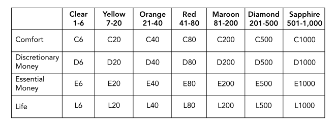

| Project Year -- 2017
| Project Year -- 2017
 | Tags --
software |
architecture |
crystal |
methodologies |
cockburn |
| Tags --
software |
architecture |
crystal |
methodologies |
cockburn |
Crystal is a set of methodologies that was created by Alistair Cockburn, to differentiate projects of different size, scope and criticality. It’s easy to understand that the software needed for a nuclear reactor is much more life critical than a game. In more serious projects more testing is needed as well as more formal procedures and documentation. Ideally no mistake must be made at all, while a game can get away with a few bugs (looking at you Bethesda Game Studios).  Each color represents a certain project size in terms of number of people. So if you are making a game and your team consists of 45 people, you would have a C80 project. While there are differences between the crystal types, some common methods persist, like having constant feedback from the customer, having many iterations, and giving each member at least 2 hours of uninterrupted work each day. You should always opt to pick the simplest of the crystal, but not too simple. Use this quote:
Everything should be made as simple as possible, but not simpler. – Albert Einstein
Clear, Yellow and Orange the most commonly used, so most project will will into this category. Likewise not many projects are life critical, so most will end up in the upper part of the matrix.
Crystal Clear is the simplest of the crystal types. Only 3 roles are needed, a Sponsor who is the person or company the software is released to and who pays for it, a senior designer who can design the initial release and generally help less experienced members of the team and of course programmers who do the dirty work. There can be more than one in each role. The project is mostly informal and progress is only measured in released software.
Crystal Yellow has more members and so needs more management. Perhaps it is now a good idea to split the developers into their own room, while still communicating and giving each other feedback. It’s important that everyone shares the same vision of the project and that more planning is made for each iteration, though not too much. The atmosphere is still informal and extensive documentation should be avoided.
Crystal Orange can have up to 40 team members, so more roles are needed. A project manager handles how the project is progressing makes changes to the iteration and release planning. Perhaps you split your team into smaller teams of 10 people, who each need a team leader, that has more experience. More formality is also needed, and so are specialists. Having a team of 40 programmers will not do.
Generally the larger the team, the more complex the project, the more formality is needed. Sapphire crystal types are almost unheard of and the documentation and planning needed for projects of this size would be immense and probably impossible to control. Larger projects also take longer, so iteration duration should be changed accordingly. Having 52 iterations in a year is not very practical and only creates more ceremonial work. The more members you have in your team the more roles you need people who specialize in one thing. No one is a jack of all trades, but for small projects in the clear category you can get away with not having any dedicated specialists.
As for all agile methodologies you should follow the same agile principles in all of crystal types, by having constant customer feedback, frequent releases, time-boxed iterations, flexible teams and continuous testing.


{kind=link}
{kind=link}